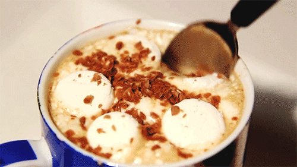
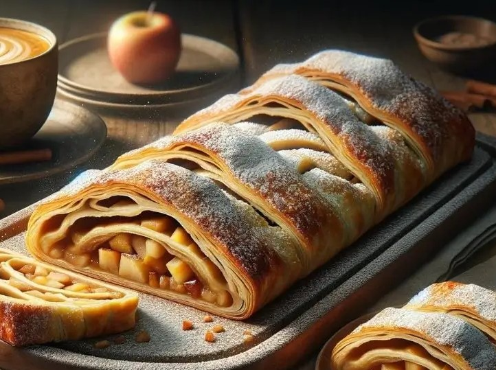
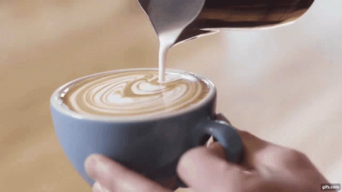

𝐂𝐡𝐨𝐜𝐨𝐥𝐚𝐭𝐞 𝐪𝐮𝐞𝐧𝐭𝐞
Segundo os pesquisadores, o chocolate é favorável ao bem-estar mental e cognitivo, ao sistema cardiovascular e ao metabolismo. E aí vale tanto o chocolate quente, que tantos apreciam no inverno, como o chocolate em barra, consumido a qualquer tempo. Mas o chocolate mais saudável é o que contém maior taxa de cacau.

𝐒𝐭𝐫𝐮𝐝𝐞𝐥 𝐝𝐞 𝐦𝐚ç𝐚
É também possível encontrar o Apfelstrudel no sul da Alemanha e em muitos países que outrora fizeram parte do Império Austro-Húngaro, como a Croácia, a Hungria, a Polônia, a República Checa, a Eslováquia e a Eslovénia. A receita também foi incorporada ao repertório culinário da cozinha judaico-asquenazita.

𝘾𝙖𝙥𝙥𝙪𝙘𝙘𝙞𝙣𝙤
Cappuccino, do italiano, pronunciado: ou capuchino, geralmente pronunciado: em português, é uma bebida italiana preparada com café expresso e leite. Um cappuccino clássico, muito famoso no Brasil, consiste em um terço de café expresso, um terço de leite vaporizado e um terço de espuma de leite vaporizado.
